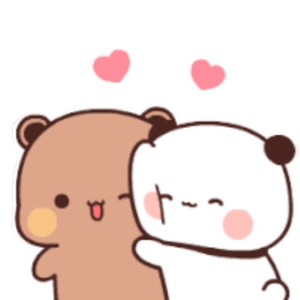
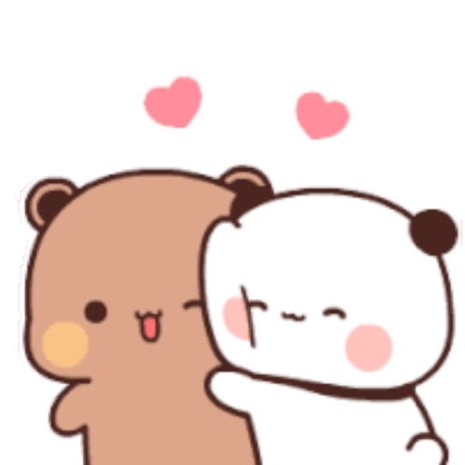
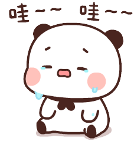
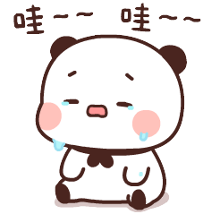
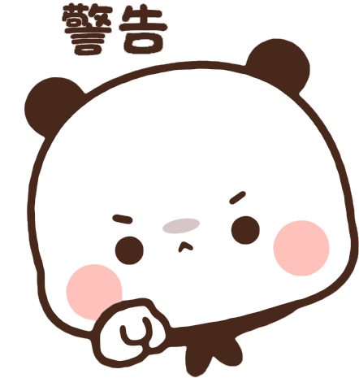
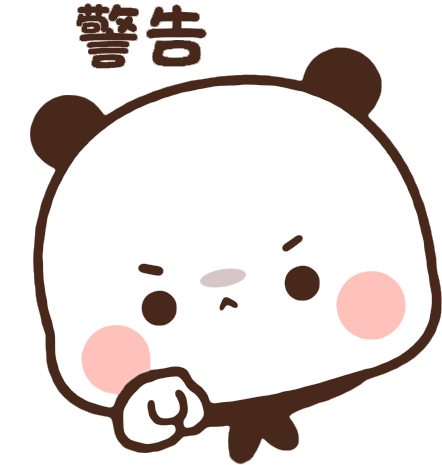
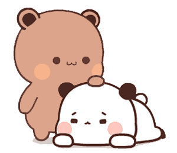
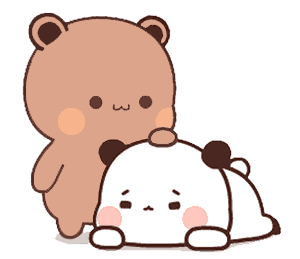

Sentuh LOVEnya!


 



 

 

 



halo sayangg, tepat di tanggal 20/01/2025 alias hari ini, it's our 1st Mensive :D/span>
kamu ingat gak sih? awal kita ketemu sama sekali gaada kepikiran untuk deketin satu sama lain, bahkan pacaran
tapi sekarang, gak nyangka kita udah satu bulan aja ngejalanin hubungan ini :3
mungkin buat orang-orang, satu bulan itu sebentar, tapi buat aku satu bulan kerasa lama banget
mulai dari kita sharing cerita, ketawa, telfonan bareng, bahkan sampai sedih bareng juga, itu yang ngebuat aku ngerasa kalau satu bulan itu lama
aku cuman mau bilang, makasih banyak ke kamu karena selalu ngertiin aku, selalu perhatian sama aku, dan semua yang kamu lakuin buat aku
akuu beneran seberuntung itu ketemu kamu, aku beruntung bisa jadi pacar kaamuuu :p
I love when we spent our time together, kayak nobar, telfonan, bahkan cuman chattan aja, aku udah seneng sayang
kamu harus tau kalau aku SAYAANGGGG BANGEETTTTT sama kamu, sayang sesayang sayangnya
kamuu pemenang dari semuanya sayang, jadi jangan ngerasa insecure ya cantik ku??
kamu tuh... beneran mood aku banget sayang..
kamu selalu jadi alasan aku senyum, ketawa, happy semuanya aja karenaaa pacar kecilku inii
intinyaa akuuu sayaaangg bangettt sama kamuu
please stay with me ya sayanggg? :(
jI love you sooo much, I'm really the luckiest girlfriend, thankyou for everything you did to me sayang
Klik untuk Geser!
hai sayang, gak kerasa ya udah sebulan aja kita jalan bareng. honestly, this first month feels so special. akuu masih inget banget waktu kita pertama kali chattan, awalnya ya kayak biasa aku gak ngeharapin banyak, paling stuck di intro aja gitu.. :3 ternyata engga hehe, you're special. thank you for staying, for being patient, and for letting me see the best version of myself through your eyes, sayang. aku tuhh bener bener bersyukur bangeettt tau bisa kenal kamu, bisa ada di hidup kamuu. kalau boleh jujur, aku nggak pernah berhenti berharap semoga kita bisa terus kayak gini ya, aku selalu mau bareng kamu :3 hmm aku tauu, mungkin aku ngga selalu perfect, ngga selalu bisa jadi yang terbaik buat kamu. tapi trust me sayang, aku selalu berusaha. karena kamu worth every effort, every sacrifice, every moment. and I really mean it that every effort I give to you. aku tau ini baru awal bangeet, dan aku berharap banget ke depannya kita bisa terus saling ngerti, saling support, dan bikin lebih banyak kenangan indah bareng. aku minta maaf, dalam sebulan ini aku pernah buat kamu nangis, kecewa dan lain lain sayang, aku beneran gak ada niatan sama sekali buat pacar aku nangis, maafin aku ya?
so, Happy 1st Mensiversary sayang! semoga kejadian sedih engga keulang lagi and I hope we can always stick together sayang, I love you!